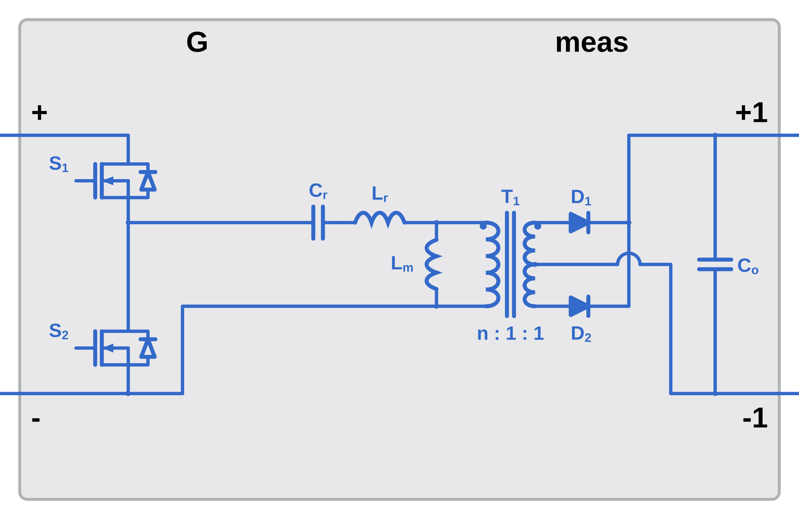
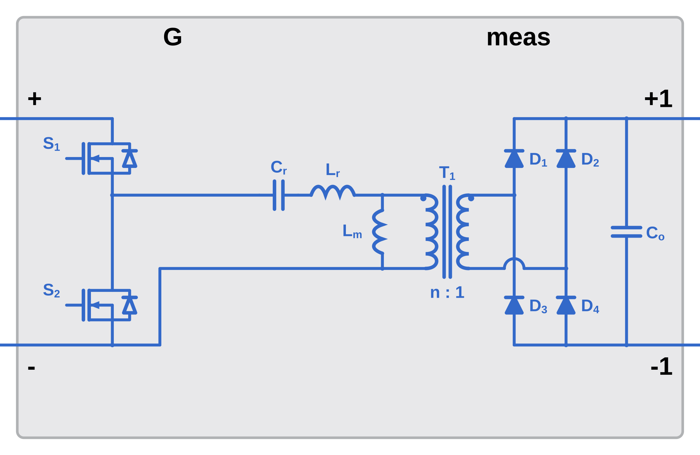
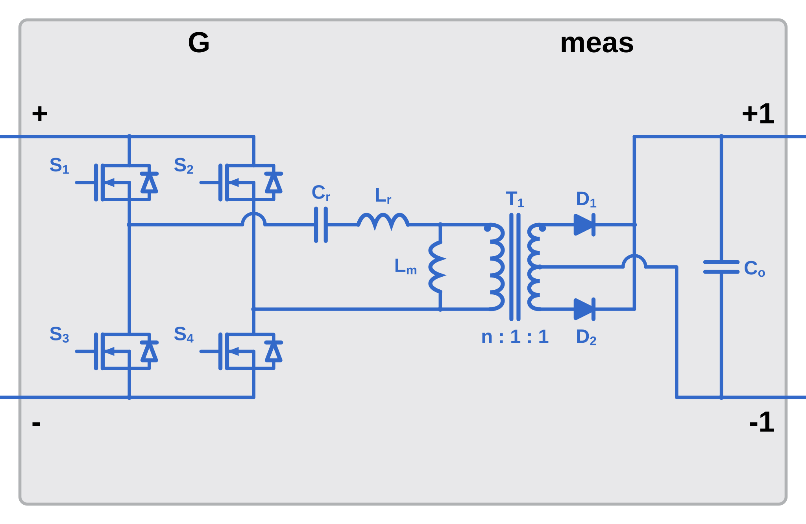
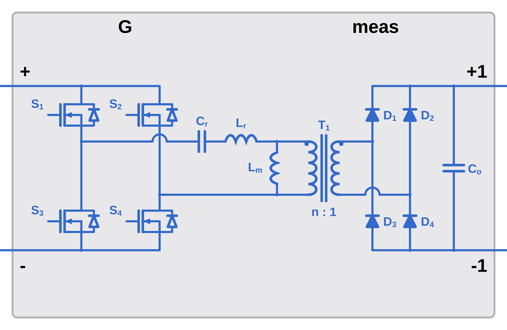

LLC resonant converter power stage with selectable half-/full-bridge primary, centre-tap/full-bridge rectifier, and configurable switch and diode fidelity
The block icon is a circuit schematic that changes with the LLC Converter model
(llcConverterModel: half-bridge or full-bridge primary) and the rectifier topology
(rectifierOption: centre-tap or full bridge). Each shipped icon is shown once under its
combination heading in Circuit Topologies below.
The LLC Converter Plant block models the power stage of an LLC series-resonant converter. The primary inverter is selectable (half-bridge or full-bridge) and the secondary rectifier is selectable (centre-tap or full-bridge diode rectifier), giving the family of circuit configurations shown in Circuit Topologies. The converter operates by driving the resonant tank at variable frequency to regulate the output voltage under varying load conditions.
The block comprises three functional sections:
llcConverterModel.rectifierOption, feeding the output filter capacitor Co.The block selects the primary inverter with llcConverterModel and the secondary rectifier with
rectifierOption. All configurations share the same resonant tank (series capacitor Cr,
series inductance Lr, magnetizing inductance Lm) and isolation transformer T1,
and an output filter capacitor Co. The schematic the block displays for each combination is its own
shipped mask icon:
rectifierOption). The two
Detailed models honor both rectifier choices, giving the four distinct icons below.
Half-bridge inverter (S1, S2) driving the resonant tank into a centre-tapped secondary with two rectifier diodes (D1, D2). This is also the icon drawn for the Simplified Half-Bridge model.

Half-bridge inverter with a four-diode full-bridge secondary rectifier (D1–D4).

Full-bridge inverter (S1–S4, legs a and b) driving a centre-tapped secondary with two rectifier diodes (D1, D2).

Full-bridge inverter with a four-diode full-bridge secondary rectifier (D1–D4).

llcConverterModel)Selects the primary inverter topology and model fidelity. Together with the rectifier option below, this determines which of the four circuit topologies is active.
| Option | Description | Use Case |
|---|---|---|
| Simplified Half-Bridge | Half-bridge primary in a flat, HDL-generatable circuit. Always drawn with the centre-tap rectifier icon. | HDL code generation, fast fixed-step simulation |
| Detailed Half-Bridge | Half-bridge primary (S1, S2) with selectable device fidelity and rectifier topology. | Detailed half-bridge LLC design and loss analysis |
| Detailed Full-Bridge | Full-bridge primary (S1–S4) with selectable device fidelity and rectifier topology. | Higher-power full-bridge LLC design and loss analysis |
rectifierOption)Selects the secondary rectifier. Honored for the two Detailed models; the Simplified Half-Bridge model always uses the centre-tap rectifier.
| Option | Description |
|---|---|
| Centre-Tap | Centre-tapped secondary winding with two rectifier diodes (D1, D2). |
| Full Bridge | Single secondary winding feeding a four-diode full-bridge rectifier (D1–D4). |
seriesInductorOption)Selects how the series resonant inductance Lr is realized.
| Option | Description |
|---|---|
| Use external inductance | An explicit series inductor Lr (with resistance RLr) is placed in the resonant tank. |
| Use transformer leakage inductance | The transformer primary leakage inductance is used as the series resonant inductance; the explicit Lr parameters are hidden. |
primaryDeviceOption)Select the fidelity of the primary semiconductor switches.
| Option | Description | Use Case |
|---|---|---|
| Ideal Semiconductor Switch | Piecewise-linear switch model with configurable Ron, Goff, and Vth, plus body-diode parameters. Fast simulation. | System-level design, frequency sweep, controller tuning |
| MOSFET (Ideal, Switching) with Thermal | Simscape MOSFET with thermal port and parasitic output capacitance (Cds). Captures turn-off losses and ZVS transitions. | Loss estimation, thermal management design, Coss-related ZVS analysis |
When "MOSFET (Ideal, Switching) with Thermal" is selected, the parasitic-capacitance parameter Cdsparasitic becomes visible.
secondaryDeviceOption)Select the fidelity of the secondary rectifier diodes.
| Option | Description | Use Case |
|---|---|---|
| Ideal Diode | Piecewise-linear diode with configurable forward voltage, on-resistance, and off-conductance. | System-level design, fast simulation |
| Tabulated Diode | Datasheet-based I-V characteristics. Use the "Open Diode block mask" button to import device data. | Accurate conduction loss estimation with specific diode part |
Inside the mask the power stage is organized as two cascaded subsystems — LLC Primary Inverter and Resonant Tank → Rectifier — whose measurement signals are gathered by a Bus Creator into the meas output. This left-to-right decomposition mirrors the power flow shown in the circuit topologies above.
LLC Converter Plant (Masked Subsystem) ├ G (Inport — gate signal vector) ├ + , - (PMIOPort — DC input, left) ├ +1 , -1 (PMIOPort — DC output, right; labelled + / - on the icon) ├ meas (Outport — measurement bus) ├ LLC Primary Inverter and Resonant Tank │ ├ LLC Simplified Model (used by "Simplified Half-Bridge") │ └ LLC Detailed Model (used by the two Detailed models) │ ├ Inverter (half- or full-bridge; Ideal Switch | MOSFET with Thermal) │ └ Resonant Tank (Cr, Lr/leakage, Lm, transformer) └ Rectifier (Centre-Tap or Full-Bridge; Ideal Diode | Tabulated Diode)
Wraps two mutually exclusive implementations: an LLC Simplified Model (a flat, HDL-generatable half-bridge) selected by the Simplified Half-Bridge model option, and an LLC Detailed Model selected by the two Detailed model options. The Detailed model contains the primary inverter (half- or full-bridge, per llcConverterModel) with the two switch-fidelity choices from Model Variants, together with the resonant tank (series capacitor Cr, series inductance Lr as an explicit inductor or transformer leakage per seriesInductorOption, magnetizing inductance Lm, and the isolation transformer). It emits the inverter sensors (Vin, Iin) and tank sensors (Ip, Vp, Is, Vs).
Contains the secondary rectifier — a centre-tap pair (D1, D2) or a four-diode full bridge (D1–D4) per rectifierOption, each with an Ideal-Diode or Tabulated-Diode fidelity choice — plus the output filter capacitor Co and the output sensors (Iout, IL, Vout, Vac).
The LLC resonant converter is characterized by the following key relationships:
where Lr = Llk1 (primary leakage inductance used as resonant inductor).
where Rac = (8/π²) · n² · Rload is the reflected AC-equivalent load resistance.
where n = N1/N2 is the transformer turns ratio.
The mask labels the left input terminals + / − and the right output terminals + / −. (Internally the output PMIO ports are named +1 / -1 to keep names unique.)
| Port | Side | Description |
|---|---|---|
| + | Left | Primary DC positive input terminal |
| − | Left | Primary DC negative input terminal |
| + | Right | Secondary DC positive output terminal |
| − | Right | Secondary DC negative output terminal |
| Port | Side | Size | Description |
|---|---|---|---|
| G | Left (top) | 4 | Gate drive signals for the primary switches. |
G is four elements wide in every model option, including the two half-bridge options. A half-bridge primary drives elements 1 and 2 and ignores elements 3 and 4, so the same connection serves all three model options.
| Element | Drives | Role |
|---|---|---|
1 | MOSFETA1, leg A high side | First diagonal. |
2 | MOSFETA2, leg A low side | Second diagonal. |
3 | MOSFETB1, leg B high side | Second diagonal. Unused by a half-bridge primary. |
4 | MOSFETB2, leg B low side | First diagonal. Unused by a half-bridge primary. |
Elements 1 and 4 form one conducting diagonal and elements 2 and 3 the other. Elements 1 and 2 are the two devices of one leg, so they are never on together. The LLC PWM Generator block produces this vector directly.
| Port | Side | Type | Description |
|---|---|---|---|
| meas | Right | Bus | Measurement bus assembled from the inverter, resonant-tank, and rectifier sensors. |
The bus holds three sub-buses, Inverter, ResonantTank and
Rectifier. The element order below is the order a Bus Selector block lists them in. The
element names are the ones the bus carries, so a name such as Vs [A] appears with that
unit label even though the signal is a voltage.
| Element | Bus element | Unit | Description |
|---|---|---|---|
1 | Inverter.VIn [V] | V | DC input bus voltage |
2 | Inverter.Iin [A] | A | DC input bus current |
3 | ResonantTank.Ip [A] | A | Primary resonant tank current |
4 | ResonantTank.Vp [V] | V | Primary tank voltage |
5 | ResonantTank.Vs [A] | V | Secondary transformer voltage |
6 | Rectifier.Iout [A] | A | DC output current |
7 | Rectifier.IL [A] | A | Rectifier output inductor current |
8 | Rectifier.Vout [V] | V | DC output voltage |
9 | Rectifier.Vac [V] | V | Rectifier AC-side voltage |
10 | Rectifier.Is [A] | A | Secondary transformer winding current |
The Simplified Half-Bridge model adds an eleventh element,
ResonantTank.Is [A], at position 5, which shifts every element after it by one. Select a
measurement by name rather than by index if you switch model options.
The tables below list every mask parameter, including the ones hidden by the current dropdown selections. The Shown when column gives the selections that reveal each one. The two Detailed options are abbreviated to Detailed.
| Parameter | Variable | Default | Unit | Description | Shown when |
|---|---|---|---|---|---|
| LLC Converter model | llcConverterModel | Detailed Full-Bridge | - | Primary topology and model fidelity | Always |
| Rated power (P) | ratedPower | 10e3 | W | Nominal power rating of the converter | Always |
| Nominal input voltage (Vdc) | VIn | 380 | V | Nominal DC input bus voltage | Always |
| Resonant capacitance (Cr) | Cr | 3.3703e-07 | F | Series resonant capacitor value | Always |
| Series resonant inductance | seriesInductorOption | Use transformer leakage inductance | - | How Lr is realized | Detailed |
| Series resonant inductance (Lr) | Lr | 30 | μH | Explicit series resonant inductor | Detailed and seriesInductorOption = Use external inductance |
| Series inductance resistance | RLr | 0 | mΩ | Series resonant inductor ESR | Detailed and seriesInductorOption = Use external inductance |
| Primary leakage inductance (Lr) | Llk1 | 7.14e-06 | H | Transformer primary leakage inductance | Always |
| Primary resistance (R1) | R1 | 0.01 | Ω | Primary winding resistance | Always |
| Secondary leakage inductance (Llk2) | Llk2 | 4.0645e-07 | H | Transformer secondary leakage inductance | Always |
| Secondary resistance (R2) | R2 | 0.01 | Ω | Secondary winding resistance | Always |
| Magnetizing inductance (Lm) | Lm | 9.7705e-05 | H | Transformer magnetizing inductance, parallel with the primary | Always |
| Transformer turns ratio (n) | n | 0.96154 | - | Primary-to-secondary turns ratio n = N1/N2 | Always |
| Output filter capacitance (Co) | Cf | 0.00071111 | F | Output DC filter capacitor | Always |
| Output filter capacitor ESR (Rco) | Esr | 0.02 | Ω | Equivalent series resistance of the output capacitor | Always |
| Initial output capacitor voltage | Vco | 350 | V | Initial condition for Co | Always |
| Parameter | Variable | Default | Unit | Description | Shown when |
|---|---|---|---|---|---|
| Select the primary switching device | primaryDeviceOption | MOSFET (Ideal, Switching) with Thermal | - | Device fidelity selection | Detailed |
| On-state resistance | RdsOn | 0.001 | Ω | Switch on-resistance | Simplified Half-Bridge, or primaryDeviceOption = Ideal Semiconductor Switch |
| Off-state conductance | GdsOff | 1e-5 | 1/Ω | Switch off-state leakage | Simplified Half-Bridge, or primaryDeviceOption = Ideal Semiconductor Switch |
| Threshold voltage | Vth | 2.5 | V | Gate threshold voltage | Simplified Half-Bridge, or primaryDeviceOption = Ideal Semiconductor Switch |
| Body diode forward voltage | VfBody | 0.6 | V | Body diode Vf | Simplified Half-Bridge, or primaryDeviceOption = Ideal Semiconductor Switch |
| Body diode on-resistance | RdBody | 0.001 | Ω | Body diode series resistance | Simplified Half-Bridge, or primaryDeviceOption = Ideal Semiconductor Switch |
| Body diode off-conductance | GdBody | 1e-5 | 1/Ω | Body diode reverse leakage | Simplified Half-Bridge, or primaryDeviceOption = Ideal Semiconductor Switch |
| MOSFET parasitic capacitance | Cdsparasitic | 2e-10 | F | Drain-source output capacitance Cds | Detailed and primaryDeviceOption = MOSFET (Ideal, Switching) with Thermal |
| Simulation temperature | simTempPri | 25 | degC | Junction temperature the primary devices are held at | primaryDeviceOption = MOSFET (Ideal, Switching) with Thermal |
| Parameter | Variable | Default | Unit | Description | Shown when |
|---|---|---|---|---|---|
| Select the rectifier topology | rectifierOption | Full Bridge | - | Secondary rectifier topology | Detailed |
| Select the secondary diode | secondaryDeviceOption | Tabulated Diode | - | Diode fidelity selection | Detailed |
| Forward voltage | VfSec | 0.6 | V | Diode forward voltage drop | Simplified Half-Bridge, or secondaryDeviceOption = Ideal Diode |
| On resistance | RdSec | 0.001 | Ω | Diode on-state series resistance | Simplified Half-Bridge, or secondaryDeviceOption = Ideal Diode |
| Off conductance | GdSec | 1e-5 | 1/Ω | Diode reverse leakage conductance | Simplified Half-Bridge, or secondaryDeviceOption = Ideal Diode |
| Simulation temperature | simTempSec | 25 | degC | Temperature the tabulated diode I-V table is interpolated at | secondaryDeviceOption = Tabulated Diode |
Open Diode block mask — Available when Tabulated Diode is selected. Opens the Simscape Diode block mask for importing device characteristics.
The block's mask dialog includes an Export to Unmasked Subsystem button that produces a standalone, fully editable copy of the block as currently configured. Use it when you want to customize the actual circuit (add a snubber, change a sensor, retune a device the mask does not expose) rather than only configure it through the mask dropdowns.
Clicking the button writes two files to the current MATLAB folder:
LLC_exported_<timestamp>.slx — a standalone model whose top level is a
single subsystem carrying the block icon. Inside is the circuit with no parameter
mask: every Simscape block is open and editable, and the ports are exposed for wiring
into your own test harness.LLC_exported_<timestamp>_params.m — a script that assigns every parameter
into a base-workspace struct (for example LLC.Lr = 3e-5; % H). The exported
model's PreLoadFcn runs this file automatically, so the struct is populated as soon
as the model opens. Parameter formulas are preserved (each mask variable is retargeted to
its struct field), so the parametric relationships stay editable through this file.Key properties of the exported model:
fl_lib,
ee_lib, nesl_utility, …) are kept, since those are the Simscape
component definitions.The block has an open-loop test harness, LLCTestHarnessFullBridge.slx, in the
test folder of CombinedLLCConverterPlant. The harness holds this block, the
PWM generator that drives its G port, the input source, the load and a scope on the
measurement bus. It carries no controller: a constant reference sets the operating point, so the
harness exercises the power stage on its own.
| Block | Role in the harness |
|---|---|
LLC Converter Power Circuit | This block, configured Detailed Full-Bridge with a Full Bridge rectifier, the transformer leakage inductance as the series inductance, thermal switching MOSFETs on the primary and tabulated diodes on the secondary. |
LLC PWM Generator | LLC PWM Generator from ConverterLibrary, which produces the four-element gate vector directly. Base frequency, per-unit frequency limits and dead time from llcCompensator, pulse width 0.5, gate levels 15 V and 0 V. |
Fref (pu) | Constant 1. The generator takes its commanded frequency per unit of Fbase, which is llcCompensator.resonantFrequency, so 1 runs the bridge at the resonant frequency. |
Vin, Rload | DC voltage source at 385 V and a 20.48 Ohm load, the rated operating point of the shipped design. |
Ref | A 100 kOhm resistance across the output, which gives the output node a path to the electrical reference before the rectifier conducts. |
Measurement, Scope | Four traces off the measurement bus, Vac, Iac, Idc and Vout, one per scope axis. |
Opening the harness runs LLCConverterDefaultInputParameters through its
PreLoadFcn unless LLCDesign is already in the base workspace, so the values
the generator mask reads are there before the first simulation. The solver is ode23t and
the stop time is 10 ms.
<Converter>TestHarnessPlant.slx. See the
Plant Test Harness section of
DAB Converter,
CLLC Converter,
Boost PFC,
Interleaved Boost PFC,
Totem-Pole Boost PFC or
Non-Isolated DC-DC.